NEXUS
environmental
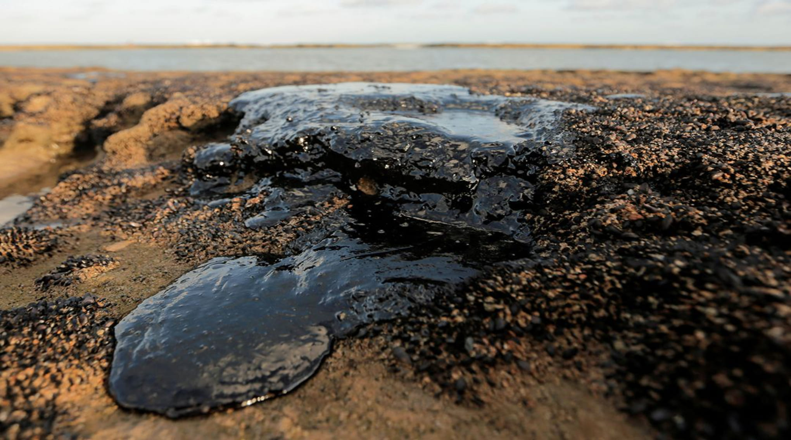
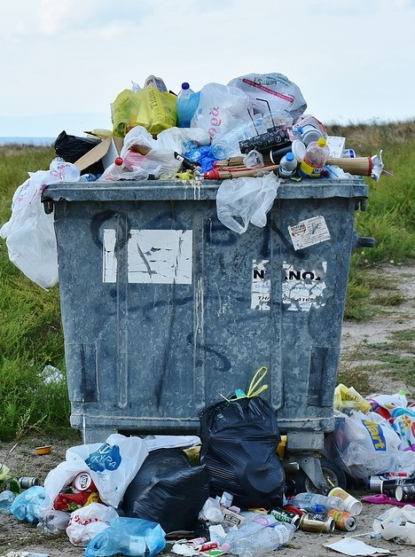
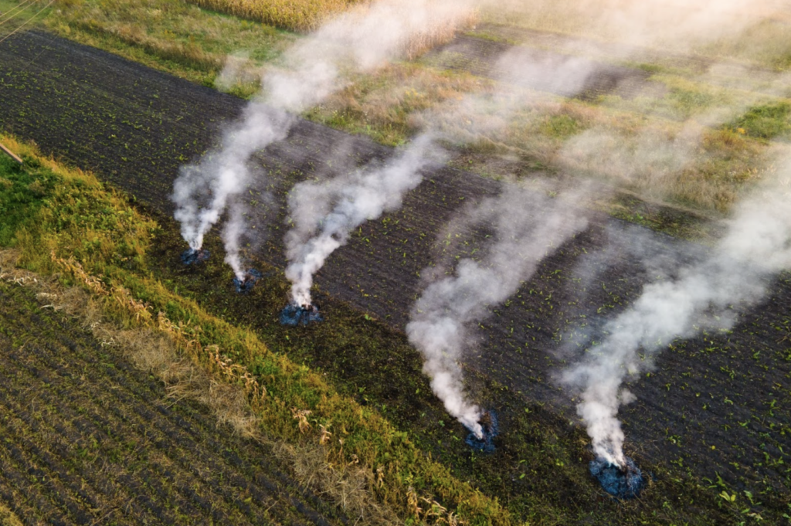
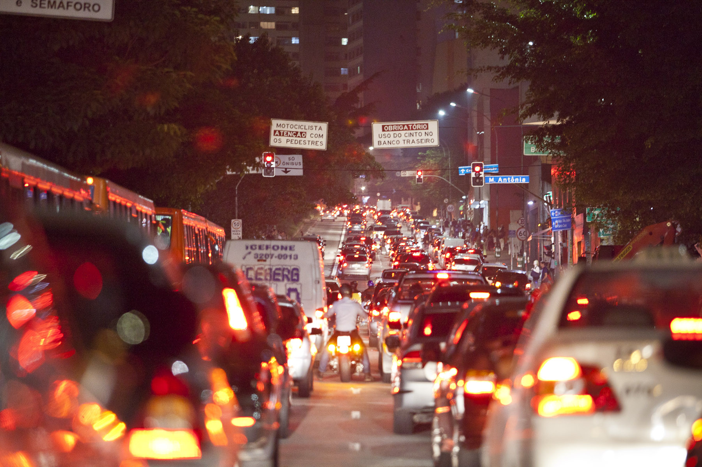

THE MULTIPLE ORIGINS
Pollution is one of the greatest environmental challenges of our era. Its causes are diverse, ranging from the burning of fossil fuels and industrial discharge to unsustainable agricultural practices and household waste. Understanding the complexity of these origins is the first step toward developing effective solutions and building a more sustainable future for everyone.
WATER POLLUTION
Water pollution is defined as any change in its physical, chemical, or biological properties that impairs its quality and renders it unsafe for use. This is one of the most critical environmental impacts, primarily caused by human activity.

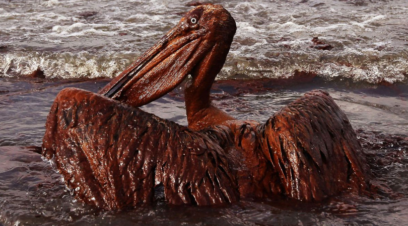
CONSEQUENCES
The consequences of water pollution are severe, directly affecting both human health and ecosystems: Human Health: Proliferation of waterborne diseases such as hepatitis, cholera, and leptospirosis, in addition to the loss of access to safe drinking water. Environment: Decline in aquatic biodiversity, contamination of groundwater and other water sources, and acceleration of eutrophication in water bodies, which leads to the collapse of aquatic ecosystems.
The Future is a Choice
Your Call to Action
Fighting pollution requires a multifaceted approach. Below are the essential battlegrounds where individuals, governments, and industries can make a difference.
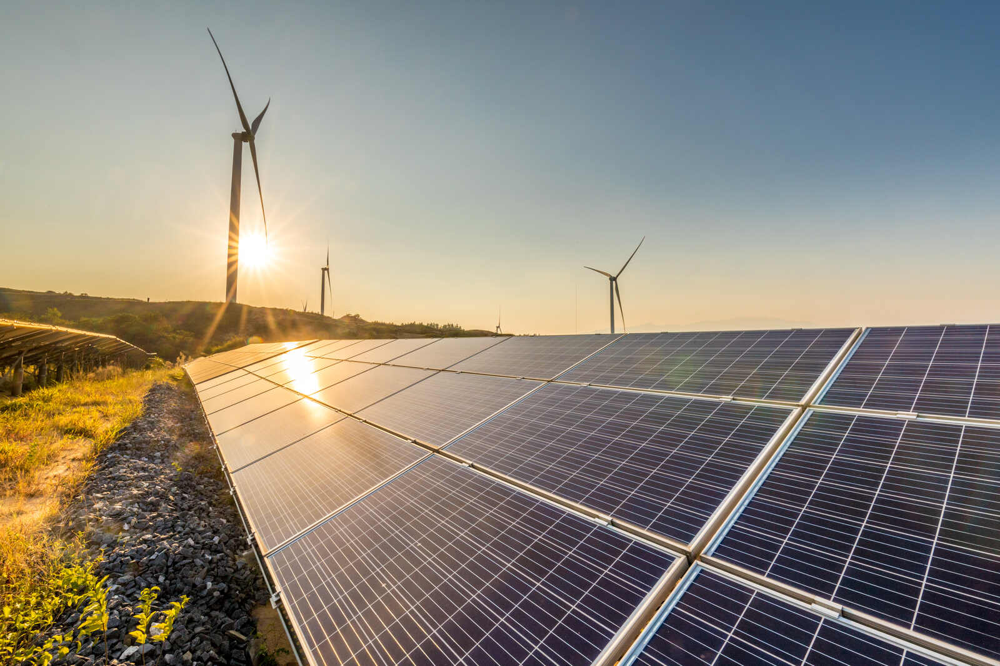
Energy & Mobility
Transitioning to renewable energy sources (solar, wind) and promoting public transit, electric vehicles, and cycling are crucial for reducing air emissions and our dependence on fossil fuels.

Consumption & Disposal
Universal implementation of basic sanitation, curbside recycling, and proper waste management is fundamental. Treating sewage and correctly disposing of trash prevents the mass contamination of our rivers, soils, and oceans.
Sustainable Mobility
Mass adoption of efficient public transit, electric vehicles, and bike lanes. Reducing the number of combustion-engine vehicles is a key step toward cleaning our city air and cutting greenhouse gas emissions.
THE NEXUS
Connecting Purposes
Environmental Nexus was born from a critical realization: saving the planet doesn't suffer from a lack of heroes, but from a lack of connection.
We operate under the philosophy of the Vital Triad (Water, Land, and Air). We don't plant the trees or clean the oceans ourselves; we are the megaphone, the beacon, and the financial shield for those who do.
Our mission is to combat apathy and misinformation by connecting civil society to the front lines of preservation, transforming isolated actions into a coordinated and unstoppable global movement.
OUR PARTNERS
Frontline organizations we support and amplify.
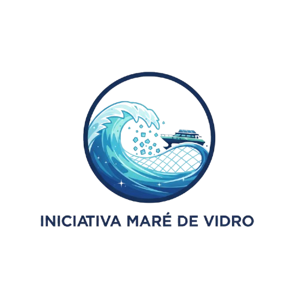
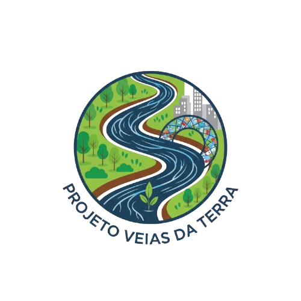
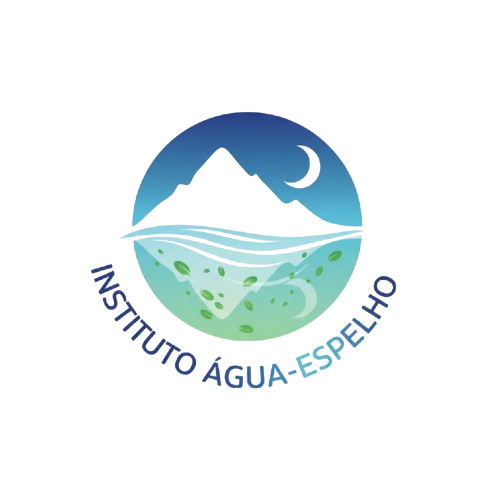
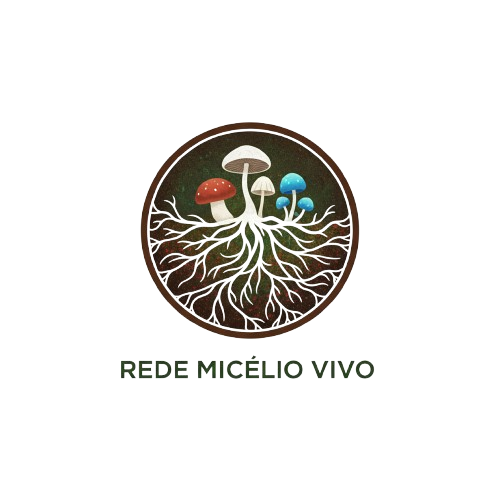
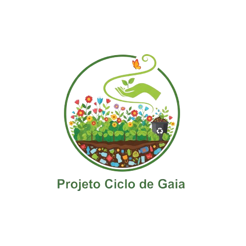
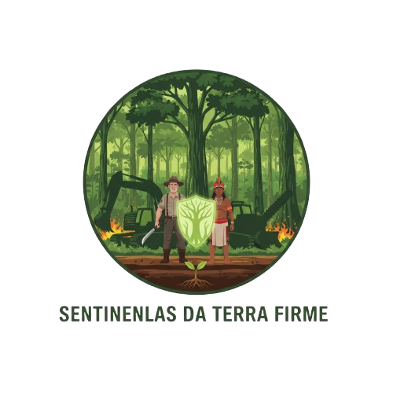
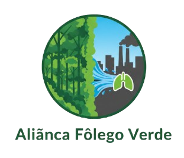
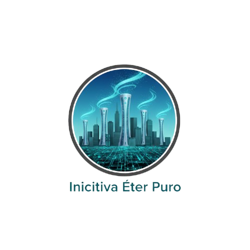